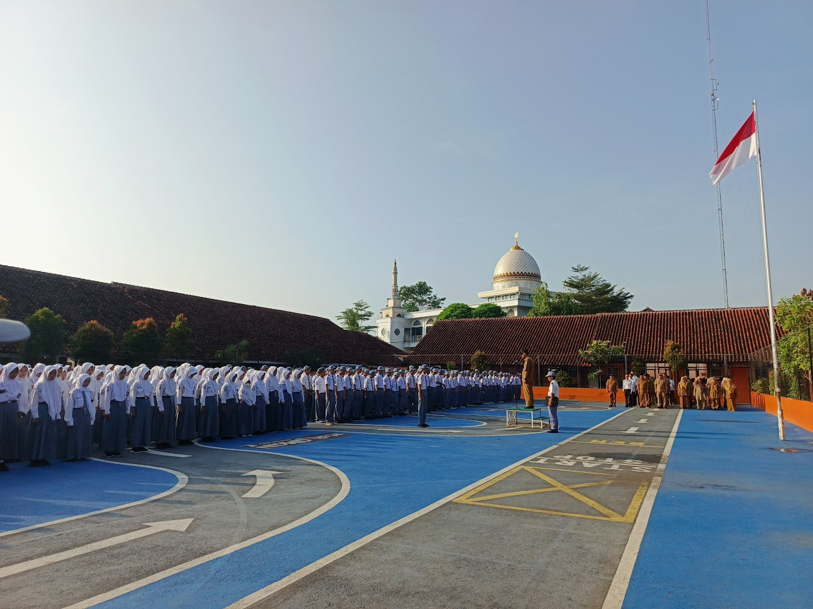
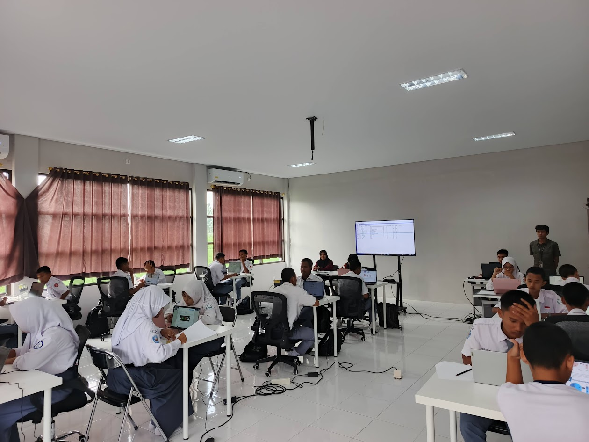
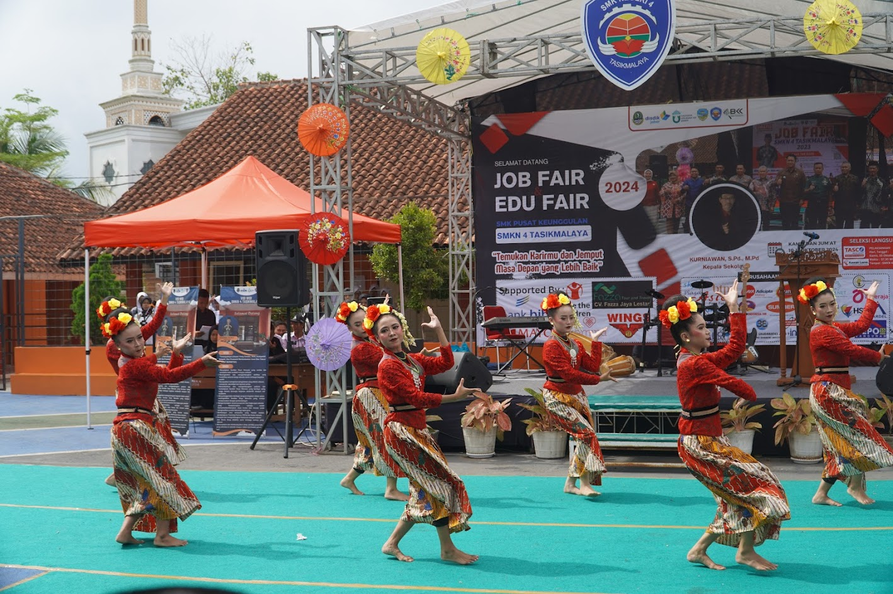
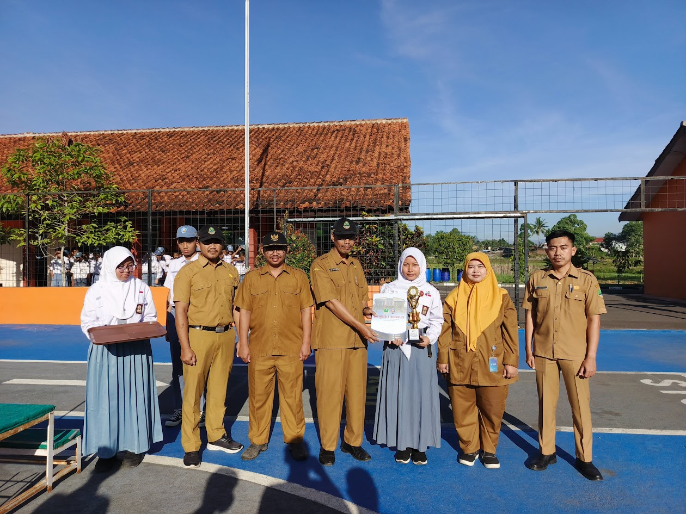
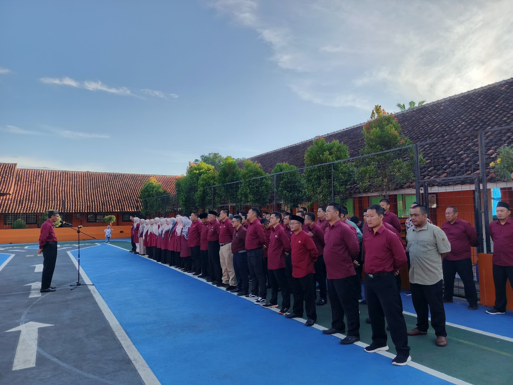
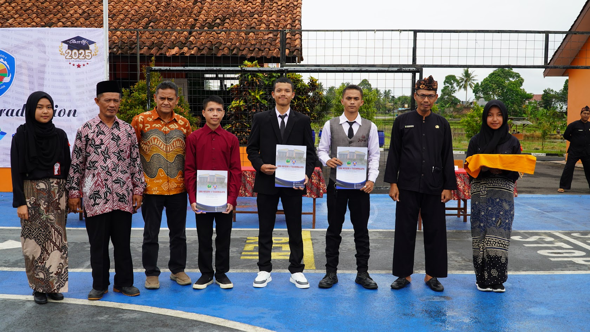
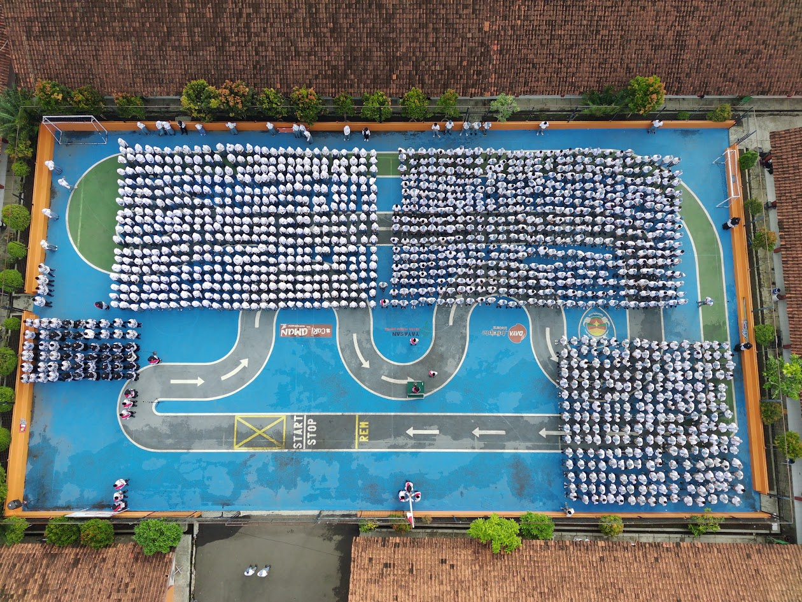

Daftar Guru
Mengenal lebih dekat para guru berdedikasi yang menginspirasi dan membimbing siswa di SMK Negeri 4 Tasikmalaya.
Jurusan ini mempelajari cara membuat aplikasi, website, dan game dari nol. Siswa akan belajar bahasa pemrograman, desain antarmuka, serta manajemen proyek digital. Cocok bagi kamu yang tertarik menjadi programmer, game developer, atau software engineer di masa depan.
DKV mengajarkan cara menyampaikan pesan melalui media visual seperti poster, logo, animasi, dan konten digital. Di sini, siswa diasah kreativitas dan kemampuan teknis dalam desain grafis, fotografi, serta komunikasi visual. Jurusan ini sangat cocok untuk calon desainer dan content creator.
Jurusan TOI fokus pada penguasaan teknologi industri dan sistem otomatisasi berbasis mesin serta kontrol digital. Siswa akan belajar mengoperasikan dan memprogram alat-alat industri modern. Lulusan TOI siap bekerja di dunia manufaktur dan industri berbasis teknologi tinggi.
TKJ membekali siswa dengan keterampilan merakit komputer, mengelola jaringan internet, serta memahami sistem operasi dan keamanan jaringan. Sangat cocok untuk kamu yang ingin menjadi teknisi komputer, admin jaringan, atau profesional di bidang IT.
Jurusan ini menggabungkan keahlian teknis dalam perawatan dan perbaikan sepeda motor dengan pengetahuan bisnis otomotif. Siswa belajar mesin, sistem kelistrikan, hingga cara membuka usaha bengkel atau layanan servis. Cocok untuk kamu yang ingin langsung kerja atau wirausaha.
Galeri ini menampilkan berbagai dokumentasi kegiatan siswa, guru, dan seluruh civitas sekolah yang mencerminkan semangat belajar, kreativitas, kebersamaan, serta prestasi di lingkungan SMK Negeri 4 Tasikmalaya. Setiap momen menjadi bagian dari perjalanan dalam membentuk generasi yang berkarakter dan berkompetensi.

Suasana upacara bendera rutin hari Senin yang diikuti seluruh warga sekolah.

Siswa sedang melaksanakan praktik jaringan komputer di ruang laboratorium.

Penampilan siswa dalam pentas seni tahunan untuk menyalurkan bakat dan kreativitas.

Siswa-siswi berprestasi yang berhasil meraih juara di berbagai lomba tingkat kota dan provinsi.

Guru-guru mengikuti pelatihan peningkatan kompetensi di bidang teknologi dan pembelajaran.

Momen penuh haru dan kebanggaan saat pelepasan siswa kelas XII sebagai penutup masa studi di SMK Negeri 4 Tasikmalaya.
Sejarah berdirinya SMK Negeri 4 Tasikmalaya tidak terlepas dari kebutuhan masyarakat akan pendidikan menengah kejuruan yang berkualitas dan terjangkau di wilayah Kecamatan Purbaratu dan sekitarnya. Pada awal tahun 2010, pemerintah daerah bersama tokoh masyarakat menyadari pentingnya pemerataan akses pendidikan kejuruan sebagai upaya peningkatan kualitas sumber daya manusia.
Sejalan dengan Program Pemerintah dibidang pendidikan Menengah Kejuruan pada saat itu yakni pemerataan akses ditambah pula dengan banyaknya keinginan masyarakat yang mengharapkan adanya SMK Negeri di daerah Kecamatan Purbaratu Kota Tasikmalaya, terutama untuk menampung tamatan dari SLTP yang ingin melanjutkan ke SMK maka beberapa tokoh masyarakat, unsur pejabat pemerintah di Kecamatan Purbaratu Kota Tasikmalaya mengusulkan kepada pemerintah Kota Tasikmalaya dan Pemerintah Provinsi Jawa Barat, agar berdirinya SMK Negeri di Kecamatan Purbaratu Kota Tasikmalaya.

Mengenal lebih dekat para guru berdedikasi yang menginspirasi dan membimbing siswa di SMK Negeri 4 Tasikmalaya.